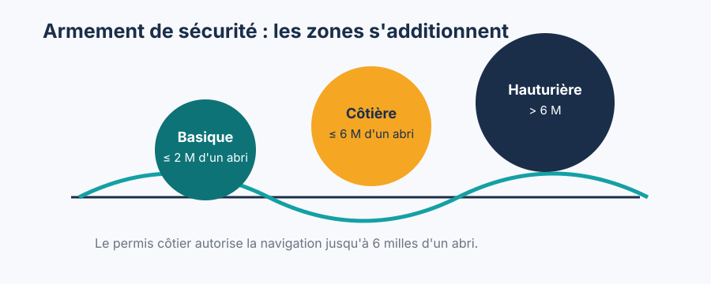
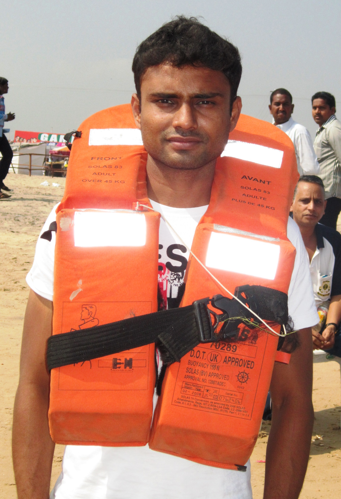
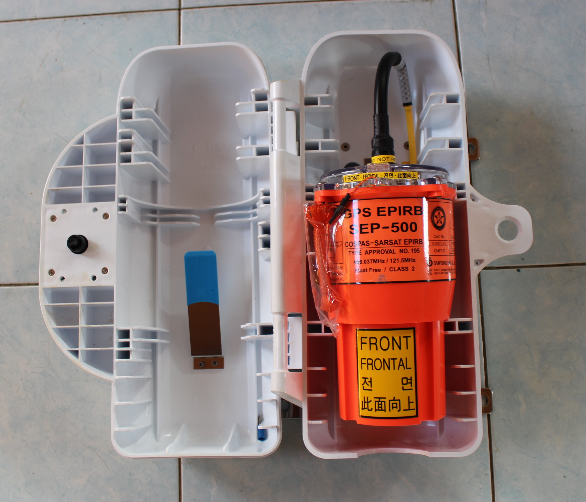

Équipement de Sécurité — L'Armement Obligatoire
Dimanche midi, au mouillage de Kızılada (Red Island).
Christelle tient un gilet de sauvetage gonflable. Elle le retourne dans tous les sens. "Comment je mets ça ?"
William lui montre : agrafe de sécurité autour de la taille, fixation sur le harnais. "En cas de chute à l'eau, tu tires sur ce bouton. Le CO2 gonfle le gilet automatiquement."
"Et si le bouton ne marche pas ?"
"Tube de gonflage oral là." Il désigne le tube jaune. "Et la lumière qui clignote ici s'allume au contact de l'eau."
Christelle étudie le gilet attentivement. "Je l'avais mis dans le coffre depuis cinq jours."
"Je sais. C'est pour ça qu'on fait ce briefing." Emmanuel sort son propre gilet — il l'a déjà vérifié ce matin. Il sort aussi son vieux carnet de bord, couverture noire abîmée. "Mon père notait chaque vérification d'équipement en 82. 'Gilet SN82-04 : CO2 ok, soupape ok, lumière ok.' Il n'avait jamais eu à les utiliser, mais il savait que le jour où il en aurait besoin, il ne serait pas en train de se demander si ça marchait." Il range le carnet. Rebeca arrive avec son gilet. "Celui-là, je l'essaie vraiment si on saute ?" William : "Pas dans ce port. À Kızılada, dans l'eau, si tu veux." Rebeca : "Vale. Je veux voir."
Les catégories de navigation
La réglementation française établit deux systèmes de classification complémentaires : les catégories de conception (A à D, attribuées par le constructeur selon les conditions de mer que le bateau peut affronter) et les catégories d'utilisation (zones 1 à 7 selon l'éloignement de la côte).
Catégories de conception :
- A — Océan : conçu pour des vents supérieurs à force 8 et des vagues > 4 m. Convient pour les traversées hauturières.
- B — Large : force 8 et vagues jusqu'à 4 m. Navigation au large des côtes.
- C — Côtier : force 6 et vagues jusqu'à 2 m. Votre gulet de charter en Méditerranée.
- D — Eaux protégées : force 4 et vagues jusqu'à 0,3 m. Lacs, rivières, rades calmes.
Catégories d'utilisation (zones) :
En France, les bateaux de plaisance sont classés selon leur catégorie de conception (A-D pour la conception, 1-7 pour l'éloignement de la côte à l'usage).
| Catégorie | Éloignement max | Zone typique |
|---|---|---|
| 5 | 2 milles | Navigation côtière, estuaires |
| 4 | 6 milles | Permis côtier : jusqu'ici |
| 3 | 20 milles | Navigation hauturière côtière |
| 2 | 200 milles | Hauturière |
| 1 | Illimité | Grand large |
Le permis côtier couvre la catégorie 4 (jusqu'à 6 milles d'un abri). Un "abri" est tout endroit où le bateau peut trouver protection contre les conditions de mer (port, rade, rivière).
L'armement obligatoire est cumulatif : la zone côtière (cat. 4) exige tout l'armement basique (cat. 5) plus des éléments supplémentaires. La zone hauturière exige tout le côtier plus des équipements de survie.
Voir concepts/securite-categories-conception, concepts/zones-navigation.
L'armement obligatoire — catégorie 4
L'équipement de sécurité n'est pas accessoire — c'est l'assurance-vie du bord. Voici ce que la loi exige en zone côtière et pourquoi chaque élément est là.

L'équipement obligatoire en catégorie 4 comprend notamment :
| Équipement | Quantité | Norme |
|---|---|---|
| Gilet de sauvetage 100N | 1 par personne | ISO 12402-4 |
| Ligne de jet | 1 | 30 m minimum |
| Feux de détresse | 3 feux rouges à main | Durée validité |
| Extincteur | 1 minimum (selon motorisation) | Valide < 2 ans |
| Radeaux de survie | Non obligatoire en cat. 4 | Recommandé |
| VHF portatif | Non obligatoire mais fortement recommandé | — |
| Pompe de cale | 1 à main | — |
| Miroir de signalisation | 1 | — |
| Compas magnétique | 1 | — |
| Carte marine de la zone | Requise | À jour |
| Document RIPAM ou synthèse balisage | 1 | — |
Pourquoi chaque équipement existe :
- Gilets : maintien en surface d'une personne à l'eau, consciente ou non
- Ligne de jet : lancer une aussière à quelqu'un à l'eau sans sauter soi-même
- Feux de détresse : signaler sa position aux secours (visibles 5–20 milles selon le type)
- Extincteur : combattre un incendie à bord dans les premières minutes
- Pompe de cale : évacuer l'eau en cas de voie d'eau ou envahissement par mer forte
- Miroir de signalisation : gratuit, illimité, visible à 10+ milles par soleil
Important sur les feux pyrotechniques : Les feux ont une date de péremption (généralement 3 ans). Des feux expirés ne constituent pas l'armement légal. À noter : en zone côtière (cat. 4), les feux obligatoires sont les feux à main rouges (3 minimum). Les fusées parachutes (portée 25–30 milles) ne sont obligatoires qu'en zone hauturière, mais sont fortement recommandées même en côtier. De nombreuses marinas organisent des collectes de feux expirés — ne les jetez pas à la poubelle.
Voir concepts/equipement-obligatoire, concepts/gilet-sauvetage, concepts/securite-materiel-armement.
Les gilets de sauvetage — types et utilisation
Le choix du gilet est critique. Un gilet inadapté peut être aussi dangereux que l'absence de gilet. L'image ci-dessous montre un gilet de sauvetage gonflable moderne, le type d'équipement que tout navigateur côtier doit connaître intimement :

Gilet de sauvetage gonflable avec harnais intégré. Notez la poignée de déclenchement manuel, le tube de gonflage oral (backup), et la lumière de détresse automatique. Un gilet par personne à bord est obligatoire — pas dans le coffre, mais accessible en moins de 10 secondes.
La réglementation française impose un gilet par personne embarquée, adapté à la morphologie du porteur (taille adulte, enfant, nourrisson). En navigation côtière (catégorie 4), le minimum réglementaire est un gilet de 100 Newtons. En pratique, les skippers expérimentés choisissent systématiquement des gilets 150N qui offrent la capacité de retourner une personne inconsciente face vers le haut. Pour la navigation hauturière ou par gros temps, les gilets 275N sont recommandés car ils compensent le poids des vêtements imperméables épais.
Les gilets se divisent en deux grandes familles : les gilets mousse (flottabilité permanente, aucun mécanisme, insubmersibles mais encombrants) et les gilets auto-gonflants (compacts quand non déclenchés, gonflés par une cartouche de CO2 au contact de l'eau via une pastille hydrostatique). Les auto-gonflants sont plus confortables au quotidien mais exigent un entretien annuel rigoureux : vérification de la pastille, de la cartouche, et test de gonflage buccal pour détecter les fuites.
Flottabilité :
- 100N — eaux protégées, nageur averti. Aide à la flottaison mais ne retourne pas forcément une personne inconsciente. Adapté aux sports nautiques en eaux calmes.
- 150N — mer agitée, peut retourner une personne inconsciente face vers le haut dans la plupart des conditions. C'est le standard pour la navigation côtière et hauturière.
- 275N — gros temps, survêtement lourd, tenues de protection imperméables épaisses. Conçu pour retourner une personne portant plusieurs couches de vêtements.
Automatique vs manuel : Le déclenchement automatique utilise une pastille hydrostatique (soluable dans l'eau) ou un déclencheur à goupille pour percer la cartouche de CO2 au contact de l'eau. Fiable mais nécessite une inspection annuelle : vérifier que la pastille n'est pas blanche/dissoute (signe d'humidité) et que la cartouche est pleine et non rouillée.
Le gonflage buccal (tube oral) est un backup en cas de défaillance de l'automatique. Un gilet à gonflage buccal seul (sans automatique) est non conforme à la réglementation française.
Le harnais : Certains gilets intègrent un harnais avec anneau de clippage. Le harnais permet de s'assurer à un point fixe du bateau (ligne de vie, épontille) par une longe — c'est l'équipement fondamental par mer formée et la nuit. Priorité : ne pas tomber à l'eau plutôt que de flotter après y être tombé.
La lumière de détresse : Intégrée ou attachée au gilet, elle se déclenche automatiquement à l'eau et clignote pendant 8h minimum (norme EN 394). Essentielle pour être retrouvé de nuit.
Port obligatoire : Par mer formée, la loi impose le port du gilet à tous les passagers. En pratique, les skippers prudents exigent le gilet dès qu'une personne est seule sur le pont ou dès la force 4.
Entretien : Vérification annuelle ou après chaque déclenchement. Gonflage à la bouche 1 fois/an pour détecter les fuites. Ne jamais laisser dans un coffre humide.
Les signaux de détresse
Les signaux de détresse ne sont utilisés qu'en cas de danger grave et imminent. Leur usage abusif est une infraction pénale.
Types de signaux visuels :
Fusée à parachute rouge : s'élève à 300 mètres, brûle pendant 40 secondes, visible jusqu'à 25–30 milles de nuit. Mode d'emploi : orienter légèrement sous le vent (pour que la fusée monte verticalement, pas vers les voiles). Tenir fermement, bras tendu, loin de la bôme. Tirer uniquement quand les secours sont susceptibles de voir — une fusée perdue dans le brouillard total est inutile.
Feu à main rouge : brûle 30–60 secondes, portée 3–5 milles. Indispensable pour guider les secours qui s'approchent. Tenir à bout de bras côté sous le vent pour éviter les étincelles sur les voiles.
Fumigène orange : signalisation de jour, visible 3–5 milles par bonne visibilité. Très visible depuis un hélicoptère. Inutile de nuit.
Miroir de signalisation : peut être visible à plus de 10 milles par soleil. Technique : tenir le miroir face au soleil, créer un flash en orientant la réflexion vers le bateau ou l'avion cible.
Séquence recommandée : D'abord MAYDAY sur VHF (portée 20–40 milles), puis fusées parachutes quand les secours sont visibles à l'horizon, puis feux à main pour guider l'approche.
Séquence d'utilisation des signaux de détresse — du plus lointain au plus proche :
1. VHF MAYDAY (canal 16) → portée 20–40 NM (voix)
2. DSC bouton rouge (canal 70) → automatique, position GPS incluse
3. EPIRB 406 MHz → satellite mondial, ±100 m avec GPS
4. Fusée parachute rouge → visible 25–30 NM, quand secours à l'horizon
5. Feu à main rouge → portée 3–5 NM, guider l'approche finale
6. Fumigène orange (JOUR) → visible 3–5 NM depuis hélicoptère
7. Miroir de signalisation → par soleil, portée illimitée, gratuit
Cette séquence est logique : commencez par alerter au maximum de portée (VHF, satellite), puis guidez visuellement les secours quand ils s'approchent. Ne gaspillez pas vos feux pyrotechniques quand personne n'est en vue — ils durent moins d'une minute chacun.
Voir concepts/signaux-detresse.
Moyens individuels de repérage
Au-delà des signaux de détresse collectifs, des équipements individuels permettent de localiser une personne à l'eau ou un navire en détresse via des systèmes satellites ou radar.
La balise EPIRB est l'un des équipements les plus efficaces pour être secouru en mer. Voici à quoi ressemble cet appareil qui peut vous sauver la vie :

Balise EPIRB 406 MHz dans son support de largage. En cas de naufrage, elle se libère automatiquement et flotte à la surface en émettant un signal capté par les satellites COSPAS-SARSAT. Les secours reçoivent votre identité (MMSI) et votre position GPS en moins de 5 minutes, partout dans le monde.
EPIRB (Emergency Position Indicating Radio Beacon) : balise de détresse 406 MHz reliée au réseau de satellites COSPAS-SARSAT. Déclenchement automatique à l'immersion ou manuel. Transmet le MMSI du navire et la position GPS (si couplée) aux centres de secours mondiaux. Les secours reçoivent l'alerte en moins de 5 minutes avec une position à ±5 km (±100 m avec GPS intégré). Obligation d'enregistrement auprès des autorités maritimes nationales — une EPIRB non enregistrée génère une fausse alerte impossible à identifier.
PLB (Personal Locator Beacon) : même technologie que l'EPIRB, mais de taille réduite, portable sur soi. S'attache au gilet de sauvetage. Déclenchement manuel uniquement. Idéal pour une personne à la mer.
AIS (Automatic Identification System) : le transpondeur AIS de Classe B émet votre MMSI, position, vitesse et cap en continu sur VHF. Visible sur tous les navires et stations côtières équipés AIS dans un rayon de 5–15 milles. Ne remplace pas le radar mais est inestimable pour être vu des navires commerciaux.
SART (Search And Rescue Transponder) : répond aux émissions radar des navires et hélicoptères en générant une série de 12 points sur leur écran radar, permettant de trouver votre position à 5–10 milles. Déclenché manuellement, placé en hauteur pour maximiser la portée.
Voir concepts/moyens-reperage, concepts/asn-dsc, entities/epirb, entities/radeau-survie, entities/equipement-vhf.
La carte de sécurité. Avant chaque départ avec passagers non expérimentés, faites un briefing de sécurité de 3 minutes :
- Où sont les gilets (pour chaque taille)
- Comment les mettre
- Où est l'extincteur
- Où est la balise de détresse
- Le signal "tous dehors" (sifflet ou voix)
Ce briefing n'est pas une formalité. C'est votre responsabilité de skipper.
À bord du Deniz Rüzgarı (catégorie 3 correspondante turque) :
4 gilets 150N automatiques, un par passager + 2 de réserve. Extincteur CO2 en carré + extincteur à poudre en salle des machines. 4 feux parachutes, 4 feux à main (durée 2026). VHF fixe + portatif (canal 16 ouvert en permanence). EPIRB 406 MHz enregistrée (MMSI 271...). Trousse de premiers secours avec manuel RCP.
Question 1 : Le Deniz Rüzgarı navigue à 5 milles d'un abri. Quelle catégorie de navigation correspond à cette zone ?
- A) Catégorie 3 — navigation côtière jusqu'à 20 milles d'un abri
- B) Catégorie 4 — navigation jusqu'à 6 milles d'un abri (niveau permis côtier)
- C) Catégorie 5 — navigation en eaux protégées uniquement (rias, lacs)
Voir la réponse
Réponse : B — La catégorie 4 couvre jusqu'à 6 milles nautiques d'un abri. C'est le niveau requis pour le permis côtier. La catégorie 3 va jusqu'à 20 milles ; la catégorie 5 est réservée aux eaux abritées et estuaires. À 5 NM d'un abri, le Deniz Rüzgarı est en catégorie 4.Question 2 : Un équipier tombe à l'eau et est inconscient. Quel gilet de sauvetage est capable de le retourner face vers le haut ?
- A) Un gilet 50N (aide à la flottabilité) — suffisant pour les nageurs
- B) Un gilet 100N — il maintient à flot mais ne retourne pas une personne inconsciente
- C) Un gilet 150N — conçu pour retourner une personne inconsciente en toutes conditions
Voir la réponse
Réponse : C — Les normes ISO définissent : 50N = aide à la flottabilité (nageurs en eaux calmes), 100N = maintient à flot mais ne garantit pas le retournement, 150N = retourne et maintient une personne inconsciente visage hors de l'eau dans des conditions normales. Pour la navigation en mer, le minimum recommandé est le 150N automatique.Question 3 : L'armement de sécurité du Deniz Rüzgarı comprend une balise de détresse EPIRB. Sur quelle fréquence émet-elle et vers quel système ?
- A) VHF canal 16 (156,8 MHz) — vers les CROSS côtiers
- B) 406 MHz — vers le système satellitaire COSPAS-SARSAT (MRCC mondial)
- C) 2182 kHz (onde longue) — vers les gardes côtes par radio HF
Voir la réponse
Réponse : B — Une EPIRB (Emergency Position Indicating Radio Beacon) émet sur 406 MHz vers le réseau de satellites COSPAS-SARSAT qui retransmet l'alerte aux MRCC (Maritime Rescue Coordination Centre). Elle inclut un GPS intégré pour la position précise. Le VHF 16 est le canal de détresse vocal (MAYDAY) mais ne remplace pas l'EPIRB.Question 4 : Combien d'extincteurs minimum un bateau de moins de 7 mètres à moteur doit-il avoir à bord en catégorie 4 ?
- A) Aucun — obligatoire uniquement pour les bateaux de plus de 10 mètres
- B) Un extincteur de type B (feux d'hydrocarbures) ou ABC de 1 kg minimum
- C) Deux extincteurs — un en cockpit, un dans la cabine moteur
Voir la réponse
Réponse : B — Pour un bateau à moteur de moins de 7 mètres en catégorie 4, au minimum un extincteur de type B (feux de liquides inflammables) ou ABC est requis. Pour les bateaux plus grands, plusieurs extincteurs sont nécessaires. Sur le Deniz Rüzgarı (13,5 m), l'armement est plus complet incluant extincteurs fixes dans la salle des machines.Lundi matin, William organise un exercice. Il jette une bouteille à la mer et crie "Homme à la mer !" L'équipage, surpris, réagit avec un temps de retard. Exactement ce qu'il voulait tester.
Session 5.3 — Urgences à Bord : homme à la mer, incendie, voie d'eau.